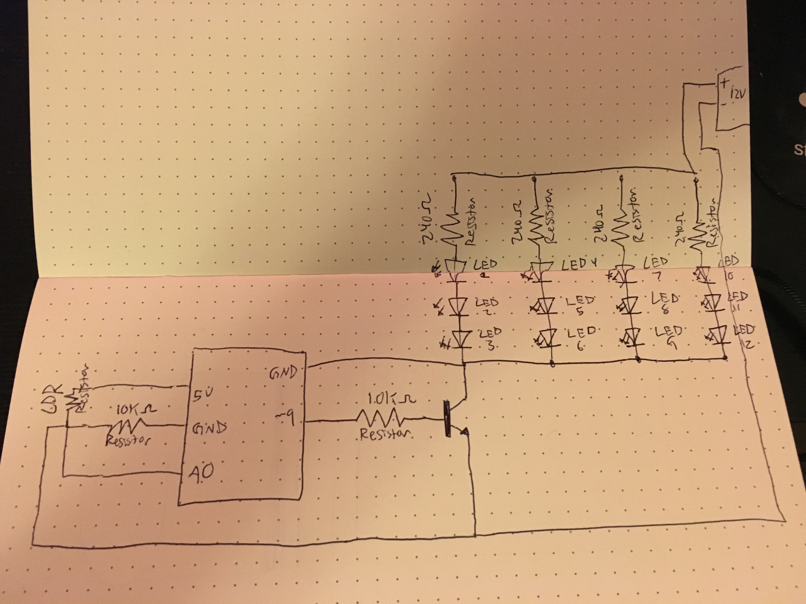
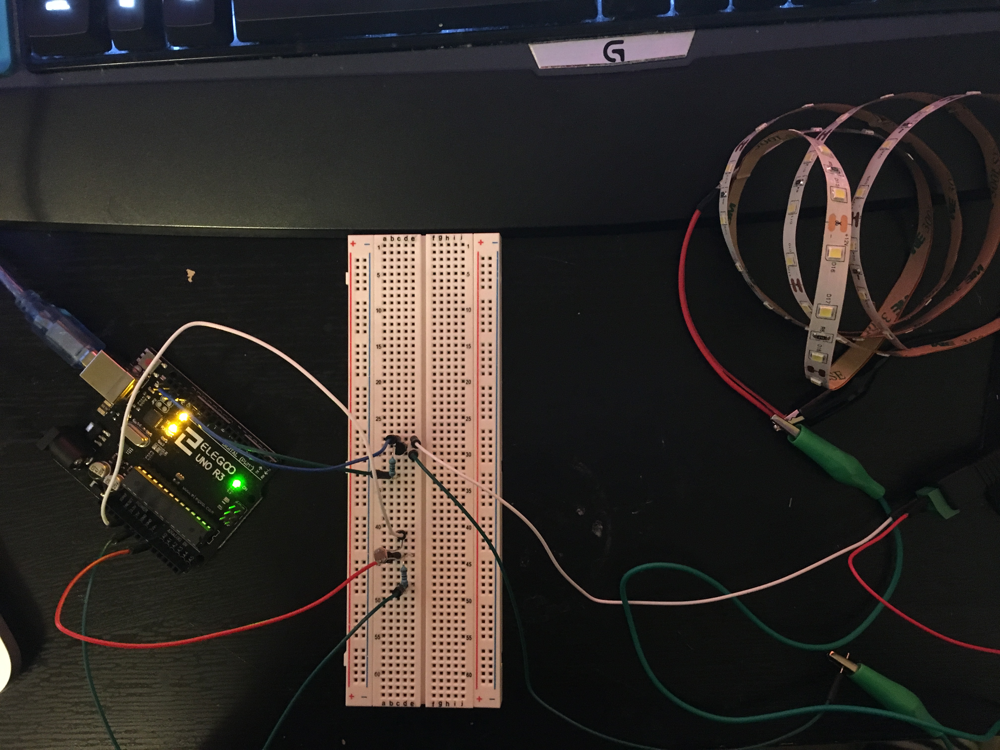
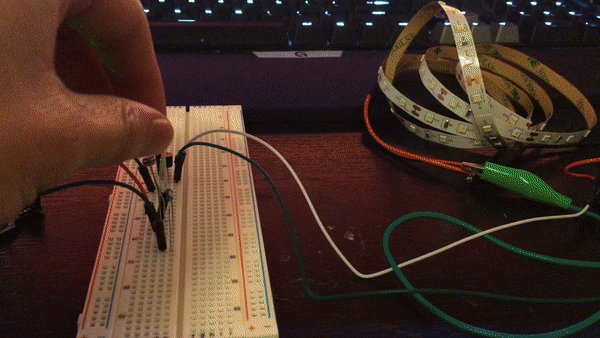

Key parts of the schematic include: LED strip, 12V power source, NPN transistor, photoresistor, and two 10k ohm resistors connected to photoresistor and NPN transistor.
The circuit's LED strip is turned off whenever the photoresistor reads a value less than 250. When the photoresistor reads a value not less than 250, the LED strip will turn on based on an analogWrite value mapped to output value.
In order to prevent the circuit from shorting and breaking pieces, I calculated resistance values. For the photoresistor, I used the 10k ohm resisitor because 5.0V / .02a = 25 ohms, (assuming 20mA flowing). For the transitor, I chose the 10K resistor, because the transitor can handle up to 0.6A. Therefore, 10K resistor results in 0.0005 amp current.
Note that the if statement runs if the photoresistor reads values less than 250. The base light value in my room was around 320, thus the starting state is LED's turned off.
/*
* Garrett Mar
* HCDE 439
*/
// Analog input mapped to n A0
const int analogInPin = A0;
// Transistor mapped to pin 9
const int analogOutPin = 10;
// The analog reading from the ldr sensor
int sensorValue;
// The output value from mapping function and sensorValue
int outputValue;
void setup() {
// Initialize serial communications at 9600 bps:
Serial.begin(9600);
}
void loop() {
// Read the value from the analogInPin, A0
sensorValue = analogRead(analogInPin);
// Map output 0-1023 to 0-255 to the range analogWrite uses
outputValue = map(sensorValue, 0, 1023, 0, 255);
// if sensor value is less than 250, turn LED's on
if (sensorValue < 250) {
// Set value of LED's to brightness equal to output value
analogWrite(analogOutPin, outputValue);
// Print LED ON statement to serial monitor
Serial.println("LED's are ON!");
// Print outputValue to serial monitor
Serial.println(outputValue);
}
// if sensor value is not less than 250, turn LED's off
else {
// Set value of LED's to zero, to turn off
analogWrite(analogOutPin, 0);
// Print LED OFF statement to serial monitor
Serial.println("LED's are OFF!");
// Print outputValue to serial monitor
Serial.println(outputValue);
}
// Wait 100 milliseconds before the next loop for analog
// converter to settle after the last reading:
delay(100);
}
Here is an animated GIF of everything in action! It turns on the LED strip when covered (the photoresistor reads values less than 250) and turns the LED strip off when not covered (photoresistor reads values not less than 250).
